Nape is a 2D rigid body physics engine designed for games, written in Haxe, and supporting all Haxe targets. Nape is compiled into .swc libraries for AS3 users. Nape is written for ease of development, with a powerful and succinct API that (outside of a release build) checks it is being used correctly, and reports errors if it is not.
Nape is higher performing than Box2D solutions in AS3/Haxe, and its memory usage is stable and far less than Box2D. Nape supports the majority of Box2D features, as well as many features not included in Box2D such as the geometric utilities, the high-level callbacks system, and more sophisticated buoyancy.
We expect the performance of Nape to be somewhere between 3 and 6 times faster than Box2D on average, whilst using about half the amount of memory (And importantly, having constant memory size). You may also expect the equivalent solution to a problem in Nape to be 2-3 times smaller than in Box2D.
PrerequisitesI will assume that you are familiar with the physics concepts: mass, moment of inertia, force, torque, density, impulses. If you are not familiar with the term moment of inertia, this is the angular equivalent to mass, similarly torque is the angular equivalent to force. If you are not otherwise familiar with these terms, I suggest you consult Wikipedia.
UnitsNape uses units of pixels for distances, not metres such as in Box2D. You should keep this in mind as - like with Box2D - physics tuning assumes a rough range of expected sizes in objects; objects should be in most cases, somewhere between 2px at the absolute smallest up to 200px.
Nape uses SI units in all other cases:
- seconds as units of time.
- kilograms as units of mass.
- clockwise radians as units of angle (Assuming the y-axis is pointing down).
Nape has an API that is in some regards, perhaps unusual compared to the majority of Haxe and AS3 APIs. These aspects should be intuitive (if surprisingly so). For Haxe users, Nape has been written with the flash target as its main focus, and many API choices reflect this by using only a subset of Haxe that has direct equivalents in AS3.
-
In AS3 you may be more familiar with enumerations (eg. Event::type) as being
Strings; in Nape enumerations are strictly-typed as a set of read-only, static
fields of the corresponding enum class. (Haxe users, these are not the same as Haxe enums).
var dynamicType:BodyType = BodyType.DYNAMIC;
There are of course, reasons why this is very good; it is impossible to assign an enumeration value that is invalid, and when accessing a property of an object, you know that it is an enumeration, and what values it can take. -
In the Flash API, you can often find instances where you have to do things like:
sprite.filters.push(blurFilter); sprite.filters = sprite.filters; // <-- sprite.transform.a = 2; sprite.transform = sprite.transform; // <--
In Nape, you do not need to do things like this, the effects of modifying an objects properties is automatically taken into account as part of a lazy system that avoids repeated calculations.var bodyPosition:Vec2 = body.position; bodyPosition.x = 10; // no need to 'refresh' the body, informing it that the position was changed.
- In most physics libraries, it is necessary to constantly wake up or activate an object that may have gone to sleep. In Nape these actions are - similar to above - automatic.
-
In most APIs, you can never be quite sure that you are using the API correctly. It is common to
find issues where someone has misused the API but their code has otherwise worked in most cases.
Such bugs can be hard to find.
In Nape, when working with the development build, each API usage is checked to ensure that it is valid, and you can be sure that you are not misusing the API - introducing bugs.
If you think you have found a bug in Nape, the very first question I will ask you is: "Are you using the development build?". If, when running your project with the development build, you receive errors then I will not accept your report as it means you are misusing the API and that is the more likely reason why something bad is happening.
If that is not the case, then the procedure for reporting bugs should be to run your project using the debug build (To see if any internal assertions are thrown) and issue a report on github.
As part of your bug report you should include a minimal test case. The smaller your test case is, the easier it is to track a bug; preferably your test case should not have a main loop, and should certainly not have any user interaction, or be dependent on random numbers.
PackagesThe Nape core is split into the following packages:
| nape: | Top-level package | |
| nape.callbacks: | Objects related to the callback system, such as CbType, and InteractionListener objects. | |
| nape.constraint: | Physics constraints such as the WeldJoint and LineJoint | |
| nape.dynamics: | Objects related to dynamical interactions such as the Arbiter and Contact types. | |
| nape.geom: | Geometric objects such as Vec2 and Mat23, as well as geometric utilities available through the Geom and GeomPoly objects among others. | |
| nape.phys: | Physics objects such as Body, Compound (Groups bodies and constraints together) and Material (Defines physical properties of Shapes). | |
| nape.shape: | Physics shapes: Circle, Polygon and related objects. | |
| nape.space: | Contains the Space object responsible for controlling simulations and related objects. | |
| nape.util: | Contains such things as Debug drawing utilities and version information. |
In this chapter, we will look at creating a basic simulation with Nape.
This chapter reads like a tutorial, and for example source code you should check the BasicSimulation code sample.
Setting up a SpaceA Space is responsive for simulating physics in Nape. We add physics objects such as Bodies and Constraints that will be simulated, and add Listeners to make use of Nape callbacks.
A Space object is instantiated with an optional gravity vector which will be applied to all rigid bodies.
var gravity:Vec2 = new Vec2(0, 600); // units are pixels/second/second var space:Space = new Space(gravity);Adding some Bodies
Creating rigid bodies involves constructing a Body object, and giving it some Shapes.
The Body defines physical positions/rotations/velocities, and Shapes give it a physical form; each Shape has a Material that defines physical properties like friction and density.
When creating a Body we define what type of body it is with the BodyType enumeration.
var staticBody :Body = new Body(BodyType.STATIC); var kinematicBody:Body = new Body(BodyType.KINEMATIC); var dynamicBody :Body = new Body(BodyType.DYNAMIC); var anotherDynamicBody:Body = new Body(); // Default value for BodyType argument is DYNAMIC.
- A static body - once assigned to a Space - is fixed; it cannot be moved or rotated, or have Shapes removed from it; a static body has no velocity. We can, however, perform mutations such as changing the shape materials.
- A kinematic body is similar to a static body, except that it is permitted to have a velocity which will strictly define how the kinematic body moves. Such bodies will not be effected by gravity or any constraints including contacts. You can think of kinematic bodies as being animated.
- A dynamic body is under control of the physics simulation, it will fall under gravity, be pulled at by constraints and be effected by collisions and buoyancy forces.
To create a floor, we can make use of a Polygon shape.
Polygons in Nape are defined by a set of convex coordinates; it doesn't matter whether they are in clockwise, or counter-clockwise order. The constructor for the Polygon shape takes as its first argument, the set of coordinates which is dynamically typed to accept one of: Array<Vec2>, Vec2List, flash.Vector<Vec2> or a GeomPoly.
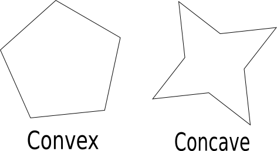The Polygon class also has a few static methods for generating Arrays of Vec2 that can be used to construct Polygons.
var rectangleVertices:Array= Polygon.rect(top-left-x, top-left-y, width, height); var boxVertices :Array = Polygon.box(width, height); // ^ equivalent to Polygon.rect(-width/2, -height/2, width, height); var pentagonVertices :Array = Polygon.regular(width, height, 5);
| NOTE: |
A Body will always rotate about its centre, regardless of where the centre-of-mass exists.
For this reason, it is important that a dynamic type Body has its centre-of-mass at local
coordinates (0,0). The Body object has methods to translate its shapes in the local
coordinate system, as well as a method align which will apply the necessary translation to move
the centre-of-mass to the origin.
If you are creating a dynamic box object, you would then want to use the Polygon.box method to define the vertices, and set the position of the Body to be where you want the box to be created in the Space. |
For a static floor object, that is not rotating it does not matter where the centre-of-mass lies, and we are free to use the Polygon.rect method.
var floorBody:Body = new Body(BodyType.STATIC); var floorShape:Polygon = new Polygon(Polygon.rect(0, stage.height, stage.width, 1));
To add the Shape to the Body we can use one of two methods:
// Either floorShape.body = floorBody; // Or floorBody.shapes.add(floorShape); // or use the push or unshift methods
The choice is entirely up to you, and whichever you consider to be the appropriate style. You can also remove Shapes in the equivalent ways by using the remove method on the ShapeList, or simply setting the body property of the Shape to null.
To add the Body to the Space we have a similar set of choices for adding/removing:
// Either floorBody.space = space; // Or space.bodies.add(floorBody);Adding a dynamic circle
For our circle object, we will use the Circle shape type.
Circles in Nape are defined by a radius and a local position in the Body it is assigned to, these are respectively, the arguments to the Circle constructor.
var circle:Circle = new Circle(10); // local position argument is optional. var anotherCircle:Circle = new Circle(10, new Vec2(5, 0));
We'll position the circle so that it is in the middle of the stage and give it an initial velocity to throw it down to the floor.
var circleBody:Body = new Body(); // Implicit BodyType.DYNAMIC circleBody.position.setxy(stage.width/2, stage.height/2); // or circleBody.position = new Vec2(stage.width/2, stage.height/2); // or circleBody.position.x = stage.width/2; etc. circleBody.velocity.setxy(0, 1000);
We'd also like this object to be bouncy, for which we defer to the Material object.
Shape MaterialsMaterials in Nape define coefficients of dynamic, static and rolling friction, elasticity and density for the Shapes they are assigned to. The density is used in computing the mass, moment of inertia, and centre of mass of a Body whilst the other values are combined in contact calculations and other frictional computations like fluid drag.
We can change the Material of a Shape at any time, even for static Bodies. Shapes are constructed with their own Material object corresponding to the default Material. For the construction of Materials, there are also some pre-set factories as static methods of the Material class.
// Set individual values circleShape.material.elasticity = 1; circleShape.material.density = 4; // Assign a totally different Material, can use this style to share Materials. circleShape.material = Material.rubber();
To learn how the values of the Materials will be combined, and what the valid ranges are for the properties you should check the API page for Material.
Running the simulationTo run a simulation, we use the step function on the Space. We will call this function sequentially each frame to advance the simulation, objects will be moved forward based on velocities with gravity and drag being applied. Collision detection will occur with new contacts created, and all constraints will be solved. When using the callbacks system, this function will also invoke your callback handlers.
// Step forwards in simulation by given amount of seconds. space.step(deltaTime);
We can also specify the number of physics iterations that should be used. These iterations are used to solve the physics constraints and are split into two categories.
| Velocity Iterations | In this stage, we are solving all the constraints and contacts to resolve errors in velocities of objects. This is the most important stage in solving the physics system. The default value is 10 | |
| Position Iterations | In this stage, we are solving all the constraints and contacts to resolve errors in positions of objects that remain after having solved for velocity errors, and integrated the positions of objects. This stage is necessary to resolve penetrations between objects, and to resolve positional errors of stiff constraints. Position iterations are lighter-weight than velocity iterations and the default value is 10 |
Nape provides two methods of debug drawing:
| ShapeDebug | Debug drawing using a Sprite with the flash drawing API. This is the most portable debug drawer, working in Haxe through NME for all NME targets. | |
| BitmapDebug | Debug drawing using a Bitmap and Alchemy opcodes for extremely fast line drawing. This is available only for flash10+ targets and when targeting flash should generally be preferred due to the much higher performance. |
The constructors for both debug drawers take as arguments, the width/height of the viewport, and a background colour.
This viewport is used to cull drawing of objects that are not visible (when enabled), and for the BitmapDebug object, defines the size of the bitmap. The background colour is used to tint colours to emulate alpha drawing (Avoiding more expensive alpha-based rendering); for BitmapDebug this defines the base colour for the bitmap.
var debug:Debug = new BitmapDebug(stage.stageWidth, stage.stageHeight, stage.color);
To display the debug view on the screen, you will add debug.display to the DisplayList.
var display:DisplayObject = debug.display; addChild(display);
The Debug objects have many methods for drawing things like lines and curves, as well as a transform Mat23 property that can be used to transform the input geometry (With which we can 'move' our viewport around the world). For this chapter we need only to draw the Space.
// Clear the debug display. debug.clear(); // Draw our Space. debug.draw(space); // Flush draw calls, until this is called nothing will actually be displayed. debug.flush();
| Collision | Default interaction type; when two Shapes intersect (and are able to collide), they will collide with friction and elasticity as defined by the shape Materials. | |
| Sensor | With this interaction type, two intersecting Shapes will simply pass through each other. Arbiter objects will still be created to catalogue the overlap, and you can still receive callbacks. | |
| Fluid | This interaction type corresponds to Nape's implementation of buoyancy. When two Shapes intersect, the Bodies will receive buoyancy and drag forces as determined by the fluidEnabled Shapes' FluidProperties, and the profiles of the Shapes (A stick will experience differing drag depending on the direction it moves through the fluid). |
The type of interaction that occurs depends on the shape's InteractionFilters, and the sensorEnabled and fluidEnabled Shape flags.
At a basic level, two static bodies can never interact in any way, and with the exception of sensor interactions, at least one of the bodies must be dynamic for an interaction to occur. This means that the only interaction which can occur between two kinematic bodies, is that of a sensor interaction.
Sensor interactions have the highest precedence, followed by fluid interactions, and finally collision interactions. For any interaction to occur, the InteractionFilters of the shapes must agree to interact. For sensor and fluid interactions, we must additionally have at least one of the Shapes enabled for that interaction type.
The specific procedure used by Nape to decide what sort of interaction occurs is defined like:
if ((shapeA.sensorEnabled || shapeB.sensorEnabled) && shapeA.filter.shouldSense(shapeB.filter)) {
SENSOR INTERACTION!!
}
else if (bodyA.isDynamic() || bodyB.isDynamic()) {
if ((shapeA.fluidEnabled || shapeB.fluidEnabled) && shapeA.filter.shouldFlow(shapeB.filter)) {
FLUID INTERACTION!!
}
else if (shapeA.filter.shouldCollide(shapeB.filter)) {
COLLISION INTERACTION!!
}
}
InteractionFilters
InteractionFilters work much like you may be familiar with in Box2D and other physics engines. The filters define a group and mask integer, and two filters agree to interact only if:
(filterA.group & filterB.mask != 0) && (filterB.group & filterA.mask != 0)
Nape takes this concept a step further, by having separate group and masks for each interaction type. This permits finer grained control on what sort of interaction occurs; it is for example, possible to have a fluidEnabled Shape which due to interaction filters, collides instead.
If you are unfamiliar with thinking of integers are binary values, it is still easy to construct suitable group/mask values in a pragmatic way. Say we have 3 types of objects: balls, boxes and... doughnuts. Furthermore let's say that the balls should not collide with boxes or doughnuts, and doughnuts should not collide with other doughnuts.
| Balls | Boxes | Donuts | |
| Balls | Yes | No | No |
| Boxes | No | Yes | Yes |
| Donuts | No | Yes | No |
It is clear this table is symmetric. Now, if we assign groups like:
ballFilter .collisionGroup = 1; // in binary this is 0000...00001 boxFilter .collisionGroup = 2; // in binary this is 0000...00010 doughnutFilter.collisionGroup = 4; // in binary this is 0000...00100
Then we can assign masks to match our table - in the most permissive way - like:
ballFilter .collisionMask = ~(2|4); // in binary this is 1111...11001 boxFilter .collisionMask = ~1; // in binary this is 1111...11110 doughnutFilter.collisionMask = ~(1|4); // in binary this is 1111...11010
The reason this works, is that we can interpret the expression (group & mask) != 0 as meaning "Group and Mask have at least one bit both equal to 1". In our case, we did not want the doughnuts to collide amongst themselves, and we seen in the binary representation of the group/mask that the only place the doughnut group has bit equal to 1 is in the 3rd position, and in the mask, this bit is 0.
The default values for all group/mask properties is 1 and ~0 which have binary representations 0000...00001 and 1111...11111.
InteractionGroupsInteractionGroups provide an additional way of controlling interactions between objects. InteractionGroups can be formed into trees and assigned to Shapes, Bodies and Compounds (Compounds will be discussed later).
Before two Shapes interact, we search for the most-recent common ancestor in the InteractionGroup tree; if that group exists, and is set to ignore interactions, then the two Shapes will not interact.
![[InteractionGroup ex.]](../assets/InteractionGroup.png)
In this example, we have group G1 assigned to body B1, group G2 assigned to shape S2 and compound C1, and has G1 as its parent. Group G3 is assigned to compound C2. We can compress the example case into the right-hand side graph by looking up the tree to find the closest InteractionGroup.
In this example, should we look at shapes S2 and S3, and if G2 is set to accept interactions, then S2 and S3 are permitted to interact. If G1 is set to ignore interactions, then S1 and S2 will not be permitted to interact.
InteractionFilters are more powerful than InteractionGroups in controlling interaction, however InteractionGroups can be very useful. Imagine that we have a robotic mechanism, and we do not want the robot to collide with itself, the easiest way to implement this is to create a Compound containing the robot, and then assigning it to a unique InteractionGroup set to ignore interactions. If we were to use InteractionFilters for this, then we would be forced to use up a bit in the group/mask values, and we would be limited to only a small number of robots.
ConstraintsThough we have not introduced Constraints yet, we must mention one further feature. All Constraints have an ignore property, which if set to true will not permit any of the Bodies related to the Constraint to interact.
Constraints in Nape bind bodies together. Typical examples uses would be for things such as rag dolls, cars, and mechanical contraptions.
Most of the Constraint types are positional constraints, such as the PivotJoint which, given two local positions on the Bodies, locks those points together allowing the bodies to mutually rotate about that point. Many constraints are given upper and lower limits such as the DistanceJoint which locks the points on two Bodies to be within a given range of values.
All positional constraints can be set as stiff or elastic. When using elastic constraints, we can set frequency and damping values to control the elastic behaviour, and can set maxForce and maxError to determine how much force is used, and how much error we resolve per second.
constraint.stiff = false; constraint.frequency = 30; //Hz constraint.damping = 10; //Large over-dampening // Constraint will use no more than 1000 Newtons to resolve constraint. constraint.maxForce = 1000; // Constraint will resolve no more than 10 units of positional error per second. constraint.maxError = 10; // The exact behaviour of maxError is dependent on constraint formulation.
By setting the appropriate properties, we can also permit a Constraint to be broken if its error becomes too large, or for elastic constraints, if the force required to solve the constraint becomes too large. With the callbacks system, we can receive a callback when a constraint is broken.
constraint.breakUnderError = true; constraint.maxError = 10; // If constraint exceeds 10 units of error, constraint will break. constraint.removeOnBreak = false; // Instead of removing constraint, it will simply be de-activated when broken.
Compared to other physics engines, in Nape there is no concept of ownership when it comes to Constraints. If you remove a Body, then any Constraints using the Body that are in the Space will not be removed automatically. The main reason is that you are free to modify what Bodies a Constraint works upon at any time.
To emulate behaviour of other engines, you could use the pattern:
while (!body.constraints.empty()) {
body.constraints.at(0).space = null;
}
body.space = null;
However, it is very likely that you could achieve better code by making use of Nape Compounds.
As you will be able to see, Constraints have a similar API to Bodies when it comes to adding/removing them from Spaces. The Body constraints list tracks those Constraints which make use of the Body, and which are assigned to a Space, which is why the above pattern works.
If you wish to know more about the mathematics behind the constraint derivations checkout this pdf.
PivotJointA PivotJoint locks two points, defined locally to the assigned Bodies, to be the same in world space. The Bodies will then rotate about this point.
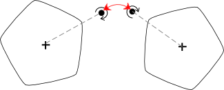You could represent this like:
body2.localPointToWorld(anchor2) == body1.localPointToWorld(anchor1)
Construction of a PivotJoint requires two Bodies together with two Vec2s defining the local anchor points. As is common with all Nape constraints, you are permitted to assign null Bodies whenever the constraint is inactive or not part of a Space.
var pivotJoint:Constraint = new PivotJoint(body1, body2, anchor1, anchor2);
If instead, you already have the Bodies positioned correctly, and know the world position of the anchors, then you could use the following pattern to construct the PivotJoint
var anchor1:Vec2 = body1.worldPointToLocal(anchor); var anchor2:Vec2 = body2.worldPointToLocal(anchor); var pivotJoint:Constraint = new PivotJoint(body1, body2, anchor1, anchor2);WeldJoint
A WeldJoint is like a PivotJoint, except that the relative rotations of the Bodies is also locked to a fixed value. This system is solved together for extra stability compared to using separate PivotJoint and AngleJoint.
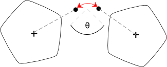You could represent this like:
body2.localPointToWorld(anchor2) == body1.localPointToWorld(anchor1) body2.rotation == body1.rotation + phase
The choice of anchors is important as it defines where the bodies will rotate relative to each other whenever the joint is forced to stretch, or when it is set as elastic.
Construction of a WeldJoint requires two Bodies together with two Vec2s defining the local anchor points. The phase can optionally be defined here, and is defaulted to 0.
var weldJoint:Constraint = new WeldJoint(body1, body2, anchor1, anchor2, phase=0);
If instead, you already have the Bodies positioned correctly, and know the world position of the anchors, then you could use the following pattern to construct the WeldJoint
var anchor1:Vec2 = body1.worldPointToLocal(anchor); var anchor2:Vec2 = body2.worldPointToLocal(anchor); var phase:Float = body2.rotation - body1.rotation; var weldJoint:Constraint = new WeldJoint(body1, body2, anchor1, anchor2, phase);DistanceJoint
A DistanceJoint constrains the distance between two locally defined points on the Bodies to be restricted to a given range.
Please note, that defining a DistanceJoint to have upper and lower limits of 0 would better be served by using a PivotJoint
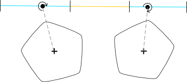You could represent this like:
jointMin <= distance(body2.localPointToWorld(anchor2), body1.localPointToWorld(anchor1)) <= jointMax;
Construction of a DistanceJoint requires two Bodies together with two Vec2s defining the local anchor points, as well as the two lower and upper limits for the joint.
var distanceJoint:Constraint = new DistanceJoint(body1, body2, anchor1, anchor2, jointMin, jointMax);AngleJoint
An AngleJoint constrains the weighted, relative rotation of two Bodies to be restricted to a given range. Remembering that Body rotations are unbounded, we can define a range greater than 2*Math.PI.
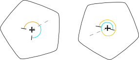You could represent this like:
jointMin <= (ratio * body2.rotation) - body1.rotation <= jointMax
Construction of a AngleJoint requires two Bodies together with the joint limits.
var angleJoint:Constraint = new AngleJoint(body1, body2, jointMin, jointMax);LineJoint
A LineJoint constrains the anchor of one body, to be constrained to a line segment defined on the other. You can think of this as a PivotJoint except that the first body anchor is replaced by a line segment.
This line segment is represented in the most general way, by use of: a position on the line, the line direction, and an upper and lower limit on signed distance along the line. This way we can represent normal line segments, as well as rays and infinite lines.
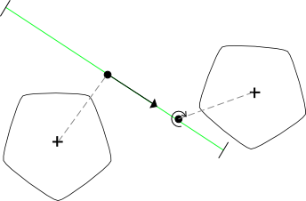You could represent this like:
let dir = body1.localVectorToWorld(direction).unit(); let del = body2.localPointToWorld(anchor2).sub(body1.localPointToWorld(anchor1)); jointMin <= dir.dot(del) <= jointMax dir.cross(del) == 0;
Construction of a LineJoint requires two Bodies together with the anchors and the line direction and joint limits.
var lineJoint:Constraint = new LineJoint(body1, body2, anchor1, anchor2, direction, jointMin, jointMax);
To convert from an actual line segment to the required format used by the LineJoint we can do:
var anchor1:Vec2 = segmentStart; var direction:Vec2 = segmentEnd.sub(segmentStart); var jointMin:Float = 0; var jointMax:Float = direction.length;MotorJoint
A MotorJoint is a velocity-only constraint, which constrains the angular velocities of the two bodies, so that their weighted sum is set to a specific rate.
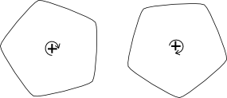You could represent this like:
(ratio * body2.angularVel) - body1.angularVel = rate
Construction of a MotorJoint requires two Bodies together with the optional rate and ratio.
var motorJoint:Constraint = new MotorJoint(body1, body2, rate = 0, ratio = 1);PulleyJoint
A PulleyJoint constrains the weighted sum of distances between two pairs of four locally defined points on the Bodies to be restricted to a given range.
This is, in the most general usage a 4 body constraint, though it may be used in 2 and 3 body set-ups also. The 3-body set-ups are most recognisable as being a pulley; especially if the middle body is static and we get a simple system where one body get's closer, the other get's further away with a positive ratio.
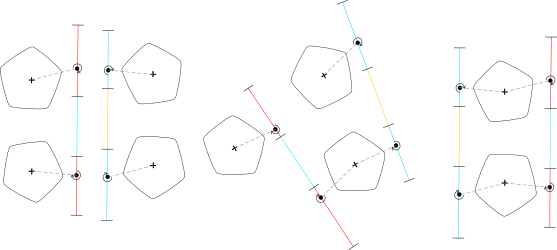You could represent this like:
var distance12 = distance(body2.localPointToWorld(anchor2), body1.localPointToWorld(anchor1)); var distance34 = distance(body4.localPointToWorld(anchor4), body3.localPointToWorld(anchor3)); jointMin <= (distance12 + ratio * distance34) <= jointMax
Construction of a PulleyJoint requires four Bodies (body1 != body2 and body3 != body4) together with four Vec2s defining the local anchor points and the ratio, and lower and upper limits for joint.
var pulleyJoint:Constraint = new PulleyJoint(
body1, body2, body3, body4,
anchor1, anchor2, anchor3, anchor4,
jointMin, jointMax, ratio = 1);
UserConstraint
The UserConstraint is an advanced API for power-users; UserConstraint provides a way to implement low-level, custom constraints whilst still being able to make constraints elastic, or breakable without any work on your side.
The nape-symbolic module, provides a higher-level interface to UserConstraint where constraint definitions can be written in a DSL that is compiled at run-time to a SymbolicConstraint object derived from UserConstraint.
For information on using the UserConstraint type, and examples of the SymbolicConstraint, checkout this pdf.
Compounds are a way of logically grouping Bodies, Constraints and other Compounds together into a single object. With respect to the Nape API, this Compound can largely be treat as a single object.
Example:
var c = new Compound(); body1.compound = c; body2.compound = c; constraint.compound = c; c.space = space;
Note that we added the Compound to the Space instead of the individual objects that form the Compound. Equally, we remove the Compound from the Space instead of its separate constituents.
Copying 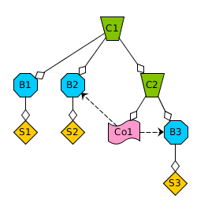When it comes to producing a copy of a Compound then you may find that not all Constraints have their body references set, as it is not required for a Constraint to reference only Bodies contained in the Compound. In the diagram we have the Constraint Co1 that is assigned to Compound C2, but references Body B2 that is outside of the visibility of C2.
In this example, if we produce a copy of C1, then everything will turn out okay. However if we produce a copy of C2, then the Constraint Co1 will have a null reference where the original referenced B2 as that Body was not part of the Compound being copied.
The callbacks system in Nape lets you receive events when certain actions occur such as a Body going to sleep, or a Constraint being broken, or two Interactors (shapes, bodies, compounds) beginning an interaction.
The callbacks system in Nape is much higher-level than you may be familiar with if coming from another physics engine, or even the events system in Flash.
CbTypesCbTypes may be considered as tags that you assign to objects. In Nape it is these CbTypes over which we listen for events. We can assign as many CbTypes as you wish to an object, so we can make our code modular.
For example; we could have behaviour in your game where certain types of objects are killed by spikes. We could give the spikes a SPIKE CbType, and any object that can be killed by them a SPIKEABLE CbType. Additionally we could have some collectable objects, and give them a CbType COLLECTABLE, and objects that can pick up those collectables a COLLECTOR CbType; since we can assign multiple CbTypes we don't need to worry about overlaps, or the need to add new behaviours later.
var SPIKE = new CbType();
var SPIKEABLE = new CbType();
var COLLECTABLE = new CbType();
var COLLECTOR = new CbType();
for (obj in spikeyObjects) {
obj.cbTypes.add(SPIKE);
}
for (obj in collectables) {
obj.cbTypes.add(COLLECTABLE);
}
// etc.
Listener Options
Listeners operate over CbTypes, or specifically over sets of CbTypes using an inclusion-exclusion API. This is represented by the OptionType object which has an inclusion, and exclusion set of CbTypes. An objects set of CbTypes matches the options if it contains at least one of the included types, and contains none of the excluded types.
The constructors for the various listeners take this options object as argument, but are typed dynamically to accept one of: CbType, OptionType, CbTypeList, Array<CbType>, flash.Vector<CbType>. This means that we can specify our Cbtypes to match against like:
// match against any object having the SPIKE type. options = SPIKE // match against any object having - inclusively - the SPIKE or COLLECTABLE type options = [SPIKE, COLLECTABLE] // match against any object having the SPIKE type, but that does not have the COLLECTABLE type. options = SPIKE.excluding(COLLECTABLE) // match against any object having - inclusively - the SPIKE OR COLLECTABLE type // but that does not have either one of the COLLECTOR type or SPIKEABLE type. options = new OptionType([SPIKE, COLLECTABLE]).excluding([COLLECTOR, SPIKEABLE]) // or options = SPIKE.including(COLLECTABLE).excluding(COLLECTOR).excluding(SPIKEABLE) // etc.
This API was chosen, as it is powerful, but still highly efficient to implement internally. If you wish to have any further constraints, such as requiring both of two CbTypes, then you will need to perform this additional logic in your event handlers. Specifically, this system is powerful enough for the following:
// match against 'any' Body that does not have the SPIKE type options = CbType.ANY_BODY.excluding(SPIKE) // match against 'any' Shape, or body options = [CbType.ANY_BODY, CbType.ANY_SHAPE]
There is no special magic going on here, CbType.ANY_BODY is just a normal CbType that happens to be assigned to all Bodies on construction. There is also CbType.ANY_COMPOUND and CbType.ANY_CONSTRAINT.
BodyListenersBodyListeners handle events associated with a single Body object, these callbacks occur at the end of a space.step() call, and so you are free to do whatever you wish. Supported events are:
- CbEvent.SLEEP
- CbEvent.WAKE
Creating a BodyListener, we use the constructor - having the following format:
var listener:Listener = new BodyListener(event, options, handler, precedence = 0);
Where the handler has type BodyCallback->Void. The precedence determines in what order the handlers will be called in the situation that there are multiple BodyListeners that can be applied to the situation.
function bodyWakeHandler(cb:BodyCallback):Void {
var wokenBody:Body = cb.body;
}
ConstraintListeners
ConstraintListeners handle events associated with a single Constraint object, these callbacks occur at the end of a space.step() call, and so you are free to do whatever you wish. Supported events are:
- CbEvent.SLEEP
- CbEvent.WAKE
- CbEvent.BREAK
Creating a ConstraintListener, we use the constructor - having the following format:
var listener:Listener = new ConstraintListener(event, options, handler, precedence = 0);
Where the handler has type ConstraintCallback->Void.
function constraintWakeHandler(cb:ConstraintCallback):Void {
var wokenConstraint:Constraint = cb.constraint;
}
InteractionListeners
InteractionListeners handle events associated with a pair of Interactor objects (Shapes, Compounds, Bodies), these callbacks occur at the end of a space.step() call, and so you are free to do whatever you wish. Supported events are:
- CbEvent.BEGIN
- CbEvent.ONGOING
- CbEvent.END
The BEGIN event occurs in the first step of which the objects interact. The End event in the first step in which the objects no longer interact. The ONGOING event in all steps for which the objects interact, overlapping with the BEGIN event.
Creating a InteractionListener, we use the constructor - having the following format:
var listener = new InteractionListener(event, interactionType, options1, options2, handler, precedence = 0);
Where the handler has type InteractionCallback->Void, and the interactionType argument is one of the enumerations specified by InteractionType object.
function beginHandler(cb:InteractionCallback):Void {
var firstObject:Interactor = cb.int1;
var secondObject:Interactor = cb.int2;
}
The int1 property of the callback, will always match against the first options property of the listener, and int2 the second.
PreListenersPreListeners are a special variation of InteractionListeners for a specific event type. This sort of event occurs as soon as two Interactors are found to be intersecting, but before any physics is performed. The handler can choose to ignore the interaction, or perform actions like modifying Arbiter friction values.
The handler for these events occurs right in the middle of a space step, and so what we can do is limited. We cannot add or remove bodies etc; these are better done with a BEGIN event handler using the InteractionListener.
var listener = new PreListener(interactionType, options1, options2, handler, precedence = 0, pure = false);
The handler for this listener has type PreListener->Null<PreFlag>. The PreFlag enumeration has possible values:
| PreFlag.ACCEPT | Accept the interaction, for this step, and all steps that follow. If this is the final state of the interaction, then the PreListener will no longer take effect until the objects have separated and interact anew. | |
| PreFlag.IGNORE | Ignore the interaction, for this step, and all steps that follow. If this is the final state of the interaction, then the PreListener will no longer take effect until the objects have separated and interact anew. | |
| PreFlag.ACCEPT_ONCE | Accept the interaction for this step. If this is the final state of the interaction, then the PreListener will be invoked in the following step to ask again. | |
| PreFlag.IGNORE_ONCE | Ignore the interaction for this step. If this is the final state of the interaction, then the PreListener will be invoked in the following step to ask again. |
If the handler returns null, then the handler will have no effect on the state of the interaction. The default is PreFlag.ACCEPT_ONCE.
The pure argument, is important when it comes to using the ACCEPT_ONCE, IGNORE_ONCE states. If your handler is non-deterministic, then it is not possible for Nape to permit objects to go to sleep as your handler may suddenly change its mind about what to do with the interaction. If your handler is deterministic, then you should set pure to true and it is no longer necessary to stop objects going to sleep.
// Non-deterministic (pure=false) handler
function impureHandler(cb:PreCallback):PreFlag {
if (Math.random() < 0.5) return PreFlag.IGNORE_ONCE;
else return null;
}
// Non-deterministic (pure=false) handler
function impureHandler2(cb:PreCallback):PreFlag {
if (getTimer() > 2000) return PreFlag.ACCEPT_ONCE;
else return PreFlag.IGNORE_ONCE;
}
// Deterministic (pure=true) handler.
function pureHandler(cb:PreCallback):PreFlag {
// cb.arbiter is an input to the function, so we can make decisions with it.
if (cb.arbiter.normal.y > 0) return PreFlag.IGNORE_ONCE;
else return PreFlag.ACCEPT_ONCE;
}
Arbiter objects represent the state of interactions in Nape. They can be accessed through the arbiters lists on Bodies, InteractionCallbacks and the arbiter property on PreCallback objects.
Apart from the Arbiter class, there are two sub-types FluidArbiter and CollisionArbiter corresponding to the associated interaction types that record additional information.
The arbiters list on Bodies records all Arbiters that exist making use of that Body. The arbiters list on InteractionCallbacks records all Arbiters between the two Interactors (Note that this list does not discriminate based on the InteractionType handled by Listener). The arbiter property on the PreCallback objects, corresponds to the first pair of Shapes that are tested during collision detection for the pair of Interactors.
FluidArbitersFluidArbiters correspond to fluid type interactions, and record the centre of buoyancy corresponding to the centre of the intersection of the associated Shapes, and the area of the intersection.
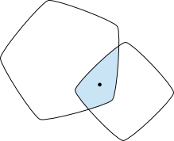There is no access to the profile of the intersection area, as this is not computed in a suitable format for exposure.
CollisionArbitersCollisionArbiters correspond to normal collision type interactions, and record the collision normal together with a set of Contact objects (Maximum 2) corresponding to the collision manifold.
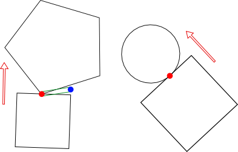Specifically, a collision between two polygons will always have 2 contacts, though in the general case one of these (Represented in blue in diagram) is a speculative contact that will have negative penetration. A collision between a circle and a polygon will always have exactly 1 contact.
You can also get access to the colliding features of the objects through the CollisionArbiter.
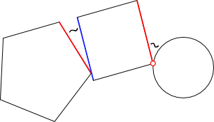The referenceEdge1/referenceEdge2 properties correlate to the colliding Edge of the respective Polygon or null if the corresponding shape is a Circle. In the case of a Circle-Polygon collision, there are the methods firstVertex/secondVertex of which one may return true if the Circle is colliding with a vertex of the reference edge, instead of the edge itself.
Nape uses object pooling for a large amount of internal objects such as the Contacts and Arbiters where it is suggested you do not hold reference to them as they may be recycled.
More specifically, Nape has object pooling for the Vec2 and Vec3 objects that may be used extensively on the public side of the API too, as well as the GeomPoly object type.
In both cases, instead of using the constructor, it is suggested you use the static get method to allocate an object from the pool if possible.
var heapVec2 = new Vec2(?x, ?y); var heapVec3 = new Vec3(?x, ?y, ?z); var helpPoly = new GeomPoly(?vertices); // better to use var pooledVec2 = Vec2.get(?x, ?y); var pooledVec3 = Vec3.get(?x, ?y, ?z); var pooledPoly = GeomPoly.get(?vertices); // And to release back to object pool pooledVec2.dispose(); pooledVec3.dispose(); pooledPoly.dispose();Weak Vec2s
For Vec2s there is an additional API named weak Vec2s. The purpose of this is to make using object pooled Vec2s easier, when they are used as temporary values. When a weak Vec2 is passed to any Nape function, it will be automatically released to the object pool on exit.
// Instead of: var tmp = Vec2.get(x, y); someNapeFunctionCall(tmp); tmp.dispose(); // Or var tmp = Vec2.get(x, y); napeObject.vec2Property = tmp; // equivalent to napeObject.vec2Property.set(tmp); tmp.dispose(); // We can do: someNapeFunction(Vec2.weak(x, y)); napeObject.vec2Property = Vec2.weak(x, y);
Nape functions which return a Vec2 will also have an optional argument that specifies if you want the returned Vec2 to be weak or not. This is also the case for methods like Polygon.box which can be asked to return an Array of weak Vec2s which when used as argument to Polygon constructor will have all the Vec2s sent to object pool automatically.
var boxPoints = Polygon.box(w, h, true); var box = new Polygon(boxPoints); trace(boxPoints.length); // 0, they were automatically sent to object pool.
The GeomPoly object encapsulates the majority of geometric utilities in Nape. It can be constructed in the same way as a Polygon accepting one of: Array<Vec2>, flash.Vector<Vec2>, Vec2List or another GeomPoly.
GeomPoly can represent any polygon, representable by a single chain of vertices including representing holes via cuts in the polygon. With the exception of the simpleDecomposition, all geometric utilities should be 100% robust.
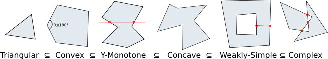
| Triangular | Having 3 vertices. | |
| Convex | Having no internal angles greater than 180 degrees; intuitively no dips in the surface. Polygons in Nape must be convex. | |
| Y-Monotone | Any horizontal line cuts the polygon at most twice. You could think of a convex polygon, as being one that is monotone in every direction. | |
| Concave | Any non self-intersecting polygon. | |
| Weakly-Simple | A self intersecting polygon, where all self-intersections are areas of the polygon touching itself, but not actually overlapping. | |
| Complex | Any polygon. |
The simpleDecomposition method of the GeomPoly type transforms complex polygons, into a set of weakly-simple ones. This decomposition will consider a point to be inside of the complex polygon following the normal rule of having an odd number of intersections on any ray beginning at the point.
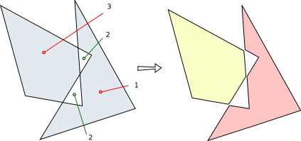
| NOTE: | This method is not 100% robust, you should not rely on it always producing the correct result, or producing a run-time error! |
The rest of the GeomPoly decomposition methods: monotoneDecomposition, convexDecomposition and triangularDecomposition all handle as input, a weakly-simple (or lesser) polygon. All of these methods should be 100% robust.
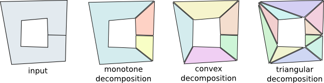All of these algorithms have O(n.log(n)) run-time.
SimplificationPolygons can be simplified in Nape using the Ramer-Douglas-Peucker algorithm implemented by the simplify method. This algorithm takes a distance threshold as input, and produces a polygon so that the distance between the polygons is at most the given distance.
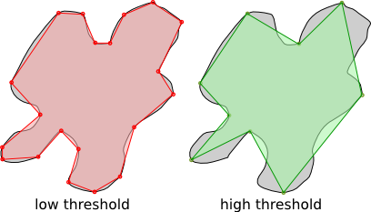This algorithm has O(n.log(n)) run-time. NOTE: you must be careful when using this method, as if you have a polygon that has complex features that nearly touch each other, but do not self-intersect, and you use too high a distance threshold it is possible for the output polygon to now be self-intersecting! A convex polygon will however always be transformed into a new convex polygon.
Marching SquaresThe MarchingSquares class, gives access to a very efficient, and 100% stable implementation of the marching squares algorithm producing weakly-simple polygons suitable for further decomposition in Nape. The marching squares algorithm performs iso-surface extractions given a scalar function over a rectangular region.
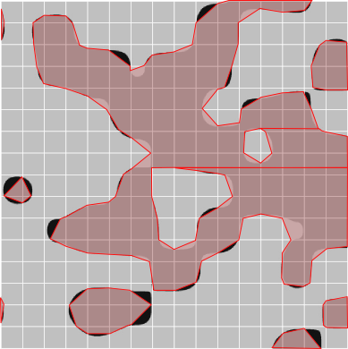Along with the rectangular region, the algorithm takes a grid size that is used to discretise the domain. The iso-function is defined to take the (x,y) coordinates of point, and return another scalar value; the algorithm produces polygons in areas where the iso-function returns a value <=0.
Assuming a constant time iso-function, this marching squares implementation, including combining output into larger polygons shown in the diagram, runs in linear time for the number of cells in the grid.
The most useful application of this, is that we can define the iso-function to sample a Bitmap, we could for example define the iso-function to return 0x80-alphaAt(x, y) so that we extract polygons representing the visible areas of the Bitmap.